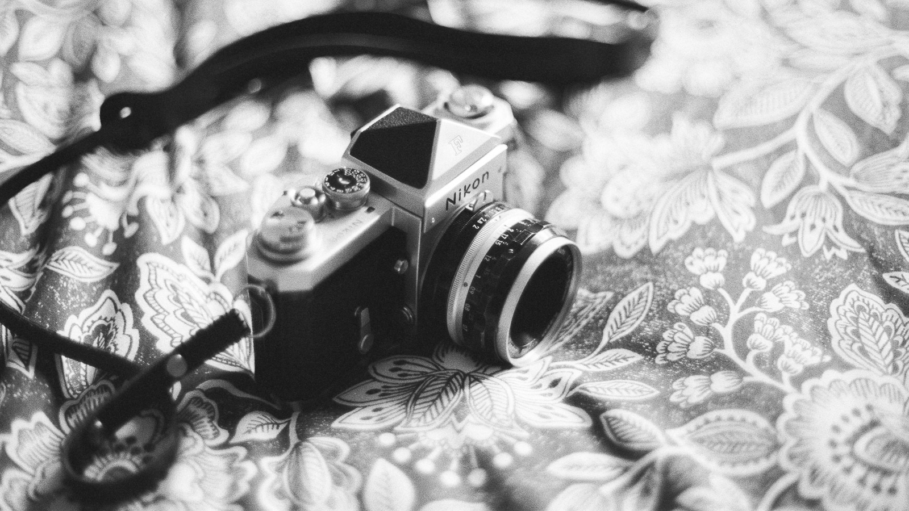
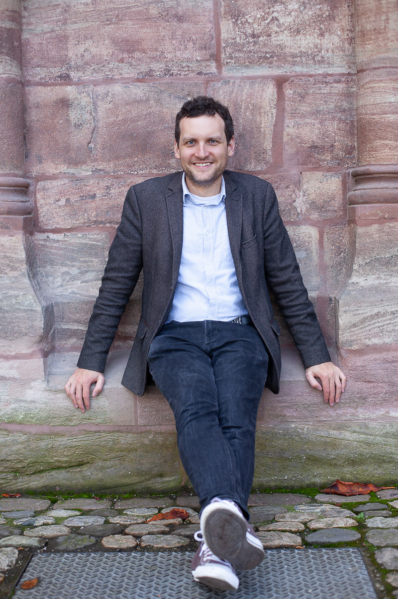

Bonjour, moi c'est Lucas !

Mon parcours.
Un Alsacien ayant parcouru son petit bout de monde. J'aime raconter vos histoires en images. Qu'il s'agisse d'un mariage, d'une promenade à deux ou d'un portrait, ce qui me plaît avant tout, ce sont les rencontres et les histoires qui les accompagnent. Voilà plus de dix ans que j'ai découvert cet art auprès d'une photographe de mariage américaine très talentueuse, Leslie Maron, qui m'a appris l'art et la technique photographique.
Pourquoi j'aime la photographie ?
Parce qu'elle m'a permis de faire d'innombrables rencontres formidables. Mon appareil photo m'a accompagné à travers toutes les étapes de ma vie de jeune adulte, il m'a ouvert des portes, fait découvrir d'innombrables personnes formidables que je n'aurais peut-être jamais connues autrement. Au fil des années, j'ai aussi découvert le bonheur de pouvoir préserver mes propres souvenirs avec le soin qu'ils méritaient.
Ce que je veux offrir.
Je souhaite vous aider à raconter votre histoire avec autant de soin et d'attention que si elle était la mienne. En utilisant toute la force de cet art presque cinématique de raconter la vie, de préserver des émotions et des instants fugaces qui font la richesse de nos existences. Rien ne me remplit plus de joie que de retrouver chez mes amis, un cadre, un fond d'écran, avec une de mes photos prise il y a parfois des années. De voir qu'un instant partagé est devenu un souvenir précieux et d'avoir pu contribuer à le préserver.
